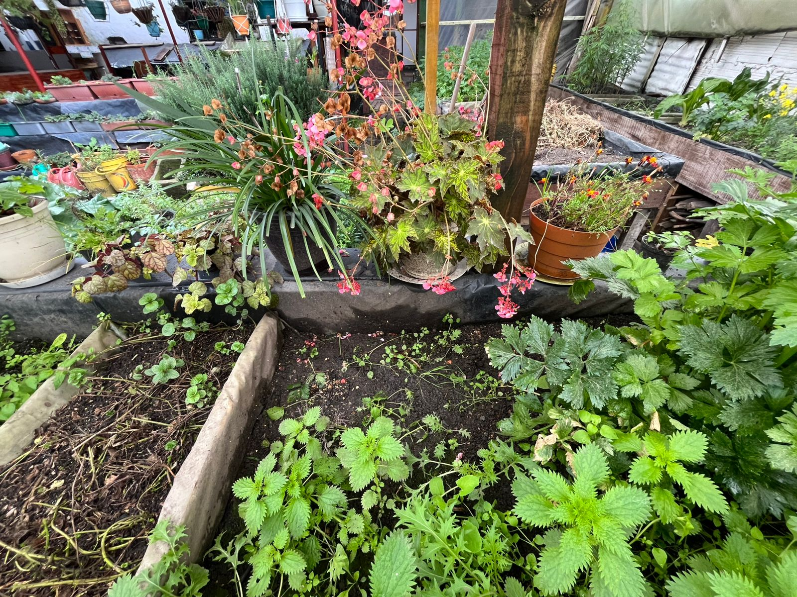

Soberanía en lo cotidiano
En la Huerta Santa Elena, la soberanía alimentaria no se formula como un ideal, sino como una práctica cotidiana que persiste, se adapta y se reinventa. No depende de planes externos ni de instituciones, sino del gesto sostenido y decidido de cultivar con lo que se tiene, de transformar lo que se descarta y de cuidar lo que crece en medio de la incertidumbre. Lo soberano se vuelve entonces: cuerpo en la compostera, intención en la semilla, decisión en la cocina y vínculo en la palabra y enseñanza.
Las definiciones más amplias de soberanía alimentaria han insistido en la necesidad de garantizar el acceso a alimentos sanos, producidos de manera sostenible, con autonomía territorial y dignidad para quienes los cultivan. En la experiencia de María Elena, muchas de estas dimensiones no solo se afirman, sino que se sostienen desde abajo: no por garantía, sino por insistencia. Dentro de estas estan la tierra que trabaja, la cual no es dada sino creada, las semillas que son el resultado de intercambios, creaciones y transformaciones, el conocimiento que circula y que no espera certificación o aprobación, solo escucha y respeto.
Sin embargo, el mismo hacer cotidiano que sostiene esta forma de soberanía también revela sus límites estructurales. María Elena lo ha dicho con claridad: en la ciudad, la única forma de hacer agricultura urbana sin tener que pelear por la tierra es siendo dueña del terreno. Esa afirmación expone de forma directa una de las grandes contradicciones del modelo: la soberanía alimentaria requiere autonomía territorial, pero en contextos urbanos marcados por el despojo y la especulación, cultivar depende muchas veces de una condición que no todos pueden cumplir: la propiedad del suelo. Lo que se presenta como un derecho, en la práctica, se vuelve una excepción.
Lo cotidiano, sin embargo, no se reduce a la repetición ni al sacrificio. Es también un lugar de invención en el cual se redefine lo útil, lo necesario y lo deseado, donde cada residuo que se convierte en abono, cada plato que se cocina con lo que hay y cada planta que crece, habla de otra forma de relacionarse con el alimento, con el territorio y con el futuro, no desde la eficiencia, sino desde el aprecio y las emociones.